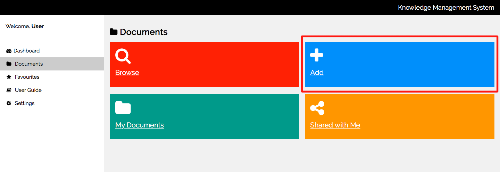
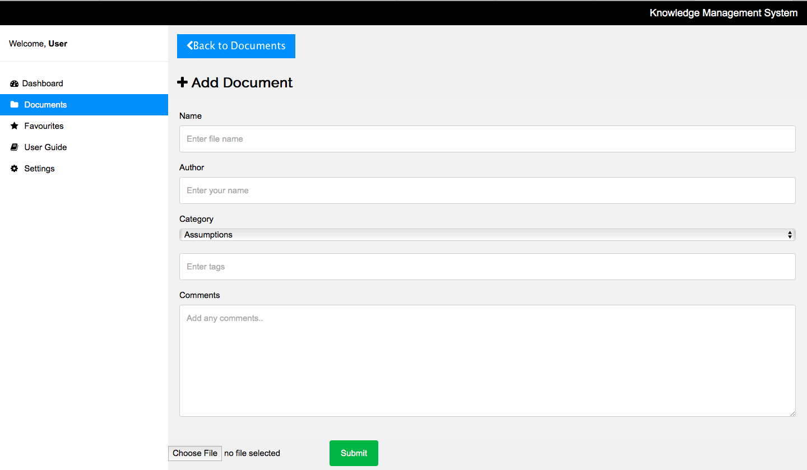

User Guide
Table of content
- Searching
- Adding a document
1. Search Document
You are able to search the documents to help find what you are looking for quicker and easier
Step:1
Go to Docuemnts tab and select the browse tile
Step:2
You can choose to search by key word or by category

Step:3
To search by key word, input the word into the search bar at the top of the page and hit the search icon
To search by category, select the from the boxes below
Step:4
Documents relating to your search criteria will be displayed

2. Add Document
You are able to upload documents to the application to share will your colleagues
Step:1
Go to Documents tab and select the add tile

Step:2
Fill in the form with as much information as possible.
Field What to add Any constraints
Name name the document relevant to the content e.g. project name
Author Add your name to allow other users to message you about your documents
Category only one category can be selected so choose the most suitable one that applies to the document. if more than one category applies then select the most relevant one and add the other category to the tags)
Tags you can add as many tags to the document as you like. Use this to add relevant details about the document which will help others determine if it is relevant to their search
Comments use the comment section when you feel necessary to add additional information for the reader
e.g. version number, if it is an update to an existing document

Name- name the document relevant to the content e.g. project name Author- Add your name to allow other users to message you about your documents Category- only one category can be selected so choose the most suitable one that applies to the document. (if more than one category applies then select the most relevant one and add the other category to the tags) Tags- you can add as many tags to the document as you like. Use this to add relevant details about the document which will help others determine if it is relevant to their search Comments- use the comment section when you feel necessary to add additional information for the reader e.g. version number, if it is an update to an existing document